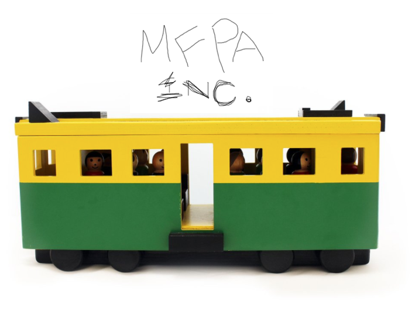

Andy Kitchen, Ken Scambler (Treasurer), Les Kitchen (Secretary), Lyndon Maydwell (President), Noon Silk, Sasha Boyd (Vice President)
A collection of posts and announcements.
AGM 2018
AGM 2019
Sponsorship of Functional Meetup Beverages
"Crashkell" Haskell Workshop
Crashkell sponsored workshop 2020